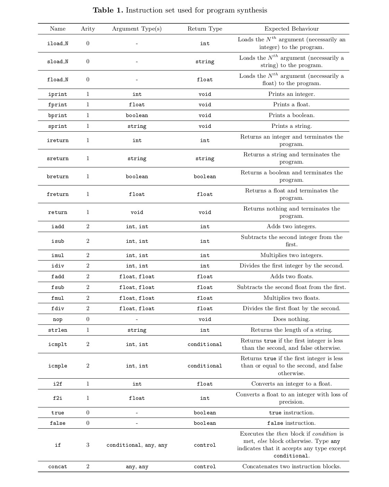
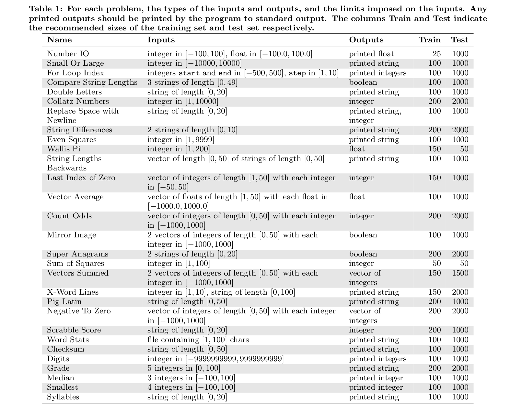
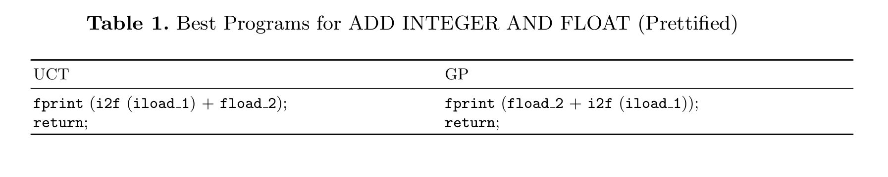
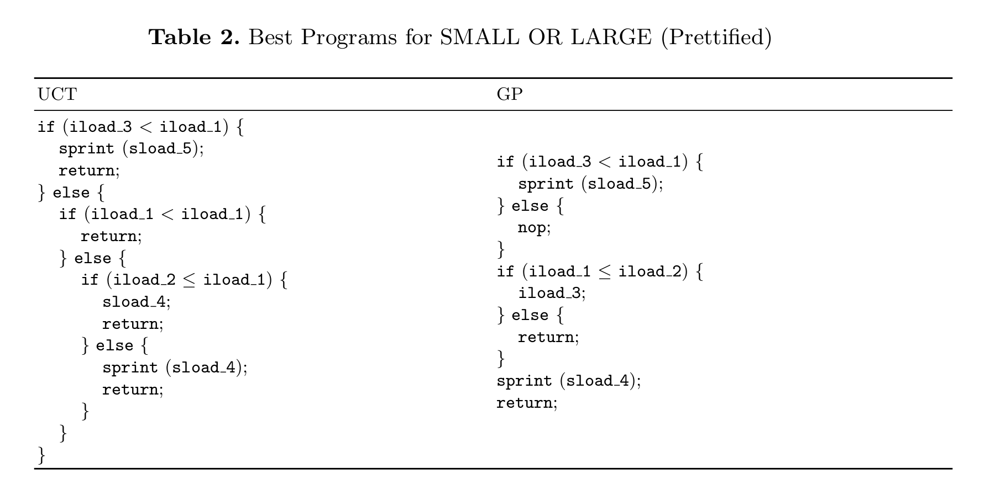
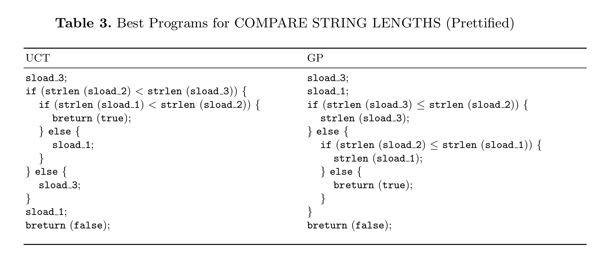
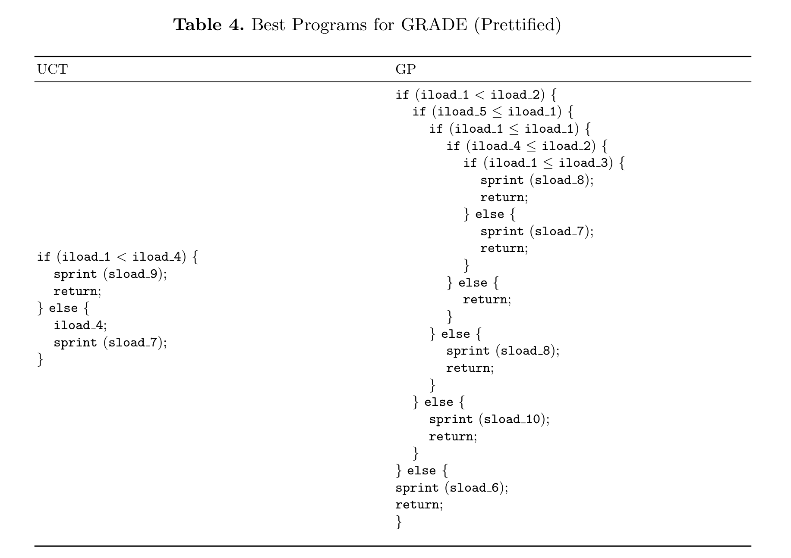
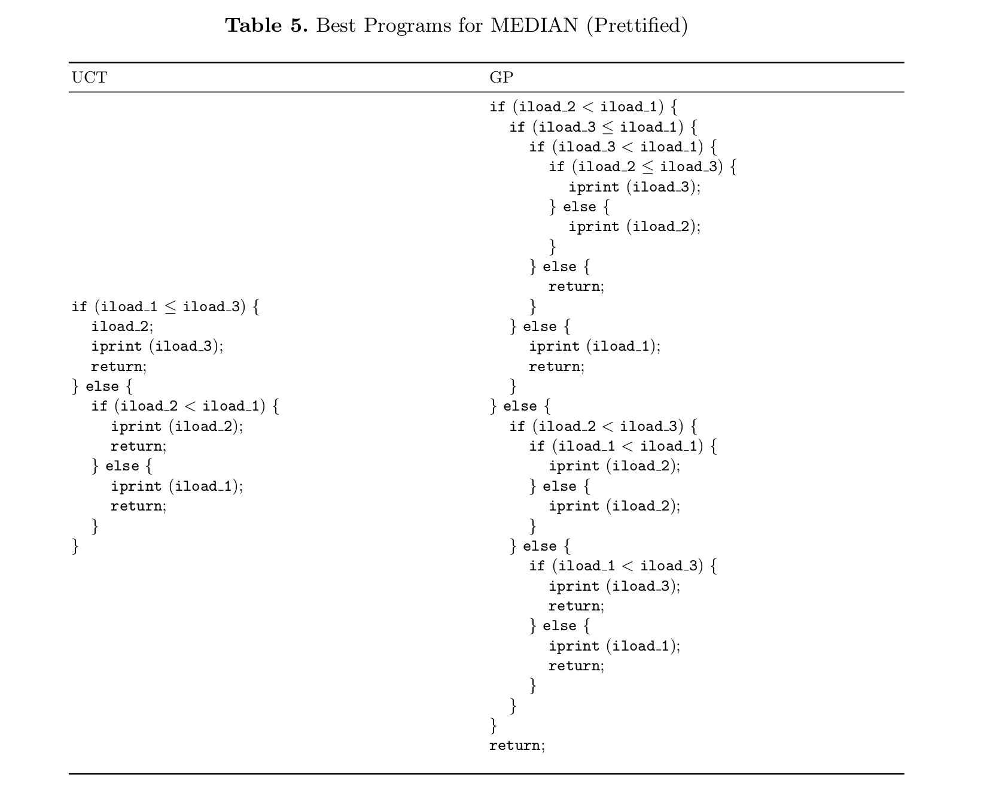
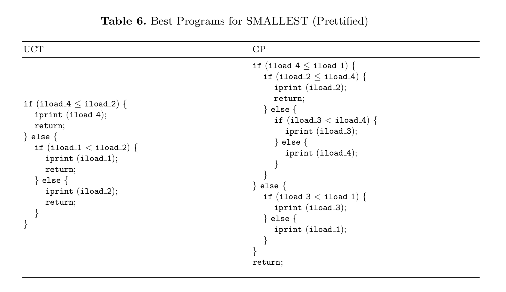
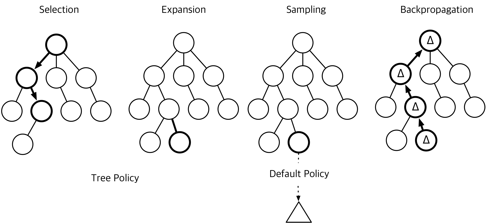
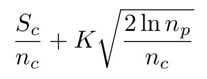

Instructions

Benchmarks

Results
.png)
.png)
.png)
.png)
.png)
.png)
.png)
.png)
.png)
.png)
.png)
.png)






This page is supplementary to the paper entitled "Field Report: Applying Monte Carlo Tree Search for Program Synthesis" (pdf here), submitted to International Symposium on Search-Based Software Engineering 2016. This page contains additional details and results that could not be reported in the paper due to page limits. The data used in the paper is also made available here to enable replication and further research on the topic.
Program synthesis aims to automatically generate an executable segment of code that satisfies a given set of criteria. Genetic programming has been widely studied for program synthesis. However, it has drawbacks such as code bloats and the difficulty in finer controlover the growth of programs. This paper explores the possibility of applying Monte Carlo Tree Search (MCTS) technique to general purpose program synthesis. The exploratory study applies MCTS to synthesis of six small benchmarks using Java Bytecode instructions, and compares the results to those of genetic programming. The paper discusses the major challenges and outlines the future work.
Monte Carlo Tree Search (MCTS) is a method of finding an optimal decision in a given domain by taking random samples in the state space and building a search tree according to the results [1]. It is ideally suited to problems for which the value of an action cannot be assessed directly, but can only be estimated by the values of sequences of actions that follow (called playouts). The intuition is that if an action A is better than an action B, then the playouts following A will yield higher rewards than those following B.
The exploration of the search space is stored in a search tree, which consists of states (represented by the nodes) and actions (represented by the edges). Figure 1 shows the high-level overview of how MCTS grows the search tree. First, starting from the root node, it recursively selects a child node by considering two statistics: the history of rewards gained by selecting this node and the number of times it was selected (Selection). The algorithm descends through the tree until it reaches a node with an unvisited child, at which point a child node is expanded (Expansion). Second, starting from the expanded node, the algorithm samples subsequent moves (i.e. actions and consequent nodes) until it reaches a terminal state (Sampling). The sequence of actions thus far is evaluated to produce a reward. Finally, it ascends through the tree to update the statistics of each visited node (Backpropagation). This is repeated until the computational budget runs out.

The performance of MCTS relies heavily on selecting a good child node (i.e. one that will eventually yield high reward) in the Tree Policy step. Upper Confidence Bounds for Tree (UCT) [2] is a variant of MCTS that provides a heuristic for child selection: it chooses a child node that maximizes the following Upper Confidence Bounds (UCB) [3]:

in which Sc is the sum of rewards for the child, nc and np the number of times the child and its parent nodes have been visited, and K is a parameter that tunes the exploration-exploitation balance.
MCTS has been widely studied in the context of games [4, 5, 6, 7]. Recently, White et al. applied MCTS for symbolic regression, giving results competitive with those of genetic programming [13]. In this work, we aim to evaluate its application as a constructive heuristic for automated programming, traditionally an application domain of genetic programming [8, 9, 10, 11, 12]. We explain our methodology, evaluate it on six small benchmarks, and show that MCTS performs comparably to GP.
This section gives the detailed description of our instruction set.
The following table, taken from the paper General Program Synthesis Benchmark Suite, gives a detailed description of the benchmarks used.
The following gives the boxplots, raw results and best-fitness programs produced by UCT and GP on each of the six benchmarks.
Boxplots, Results and Best-fitness Programs
[1] Browne, C.B., Powley, E., Whitehouse, D., Lucas, S.M., Cowling, P.I., Rohlfshagen, P., Tavener, S., Perez, D., Samothrakis, S., Colton, S.: A survey of monte carlo tree search methods. IEEE Transactions on Computational Intelligence and AI in Games 4(1), 1–43 (2012)
[2] Kocsis, L., Szepesvári, C.: Bandit based monte-carlo planning. In: Machine Learning: ECML 2006, pp. 282–293. Springer (2006)
[3] Auer, P.: Using confidence bounds for exploitation-exploration trade-offs. The Journal of Machine Learning Research 3, 397–422 (2003)
[4] Silver, D., Huang, A., Maddison, C.J., Guez, A., Sifre, L., Van Den Driessche, G., Schrittwieser, J., Antonoglou, I., Panneershelvam, V., Lanctot, M., et al.: Mastering the game of go with deep neural networks and tree search. Nature 529(7587), 484–489 (2016)
[5] Winands, M.H., Björnsson, Y., Saito, J.T.: Monte-carlo tree search solver. In: International Conference on Computers and Games. pp. 25–36. Springer (2008)
[6] Ciancarini, P., Favini, G.P.: Monte carlo tree search in kriegspiel. Artificial Intelligence 174(11), 670–684 (2010)
[7] Cazenave, T.: Nested monte-carlo search. In: IJCAI. vol. 9, pp. 456–461 (2009)
[8] Helmuth, T.: General Program Synthesis from Examples Using Genetic Programming with Parent Selection Based on Random Lexicographic Orderings of Test Cases. Ph.D. thesis, University of Massachuses-Amherst (2015)
[9] Helmuth, T., Spector, L.: General program synthesis benchmark suite. In: Proceedings of the 2015 Annual Conference on Genetic and Evolutionary Computation. pp. 1039–1046. GECCO ’15, ACM, New York, NY, USA (2015)
[10] Arcuri, A., Yao, X.: Coevolving programs and unit tests from their specification. In: Proceedings of the twenty-second IEEE/ACM international conference on Automated software engineering. pp. 397–400. ACM (2007)
[11] Arcuri, A., Yao, X.: Co-evolutionary automatic programming for software development. Information Sciences 259, 412–432 (2014)
[12] Forrest, S., Nguyen, T., Weimer, W., Le Goues, C.: A genetic programming approach to automated software repair. In: Proceedings of the 11th Annual Conference on Genetic and Evolutionary Computation. pp. 947–954 (2009)
[13] White, David R., Shin Yoo, Jeremy Singer: The Programming Game: Evaluating MCTS as an Alternative to GP for Symbolic Regression. In: Proceedings of the Companion Publication of the 2015 Annual Conference on Genetic and Evolutionary Computation. ACM (2015)